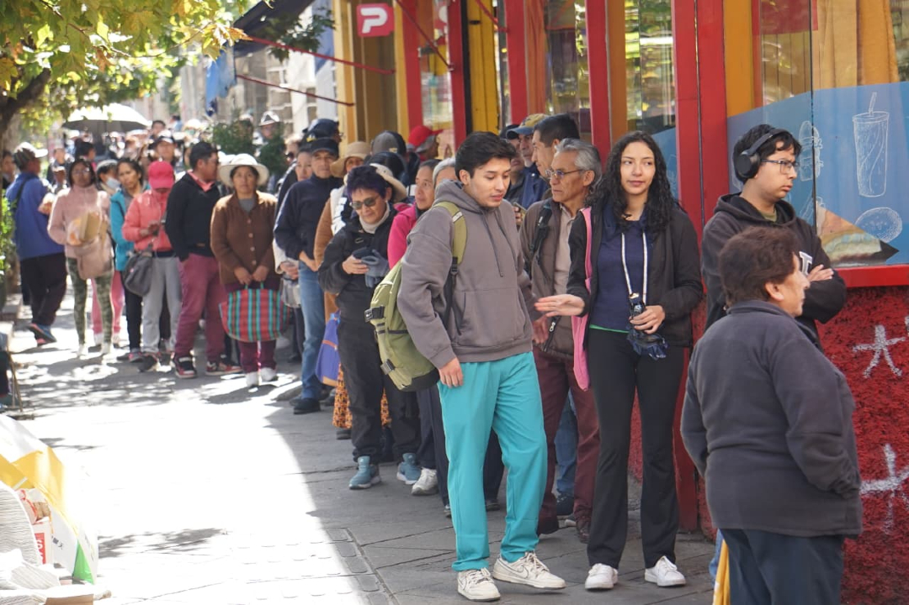
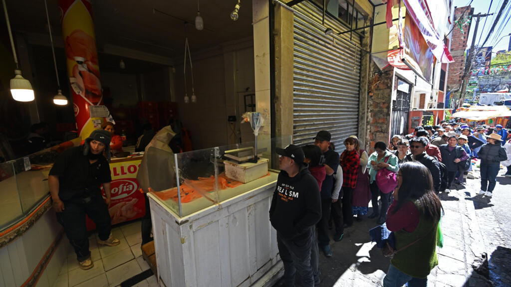

Caso de Estudio 1: Rumor de Escasez
| Demanda normal | 100 unidades |
| Aumento por rumor | 40% |
| Stock disponible | 120 unidades |
| Número de familias | 50 familias |
Resultado esperado: nueva demanda de 140 unidades, déficit de 20 unidades y stock insuficiente.
Modela cómo un rumor puede aumentar la demanda de productos básicos, reducir el stock disponible y dejar a familias sin abastecimiento.

En contextos de bloqueo, escasez y tensión social, los rumores pueden modificar el comportamiento de compra. Aunque el stock disponible sea suficiente para una demanda normal, la compra acelerada por temor puede provocar desabastecimiento en pocas horas.
Este simulador permite observar ese efecto con un modelo simple: se parte de una demanda normal total y se aplica un porcentaje de aumento provocado por rumor. Luego se compara la nueva demanda contra el stock disponible.

El número de familias se usa para estimar cuántas podrían quedar sin abastecimiento cuando existe déficit.
Estos casos permiten comprobar que el simulador calcula la nueva demanda, el stock restante y el déficit de abastecimiento.
| Demanda normal | 100 unidades |
| Aumento por rumor | 40% |
| Stock disponible | 120 unidades |
| Número de familias | 50 familias |
Resultado esperado: nueva demanda de 140 unidades, déficit de 20 unidades y stock insuficiente.
| Demanda normal | 180 unidades |
| Aumento por rumor | 65% |
| Stock disponible | 240 unidades |
| Número de familias | 80 familias |
Resultado esperado: nueva demanda de 297 unidades, déficit de 57 unidades y cerca de 16 familias afectadas.
El modelo muestra que el pánico no crea más productos disponibles: solo acelera la demanda. Por eso, una comunidad con stock suficiente puede entrar en escasez cuando muchas familias compran más de lo habitual.
Una alerta no verificada puede subir la demanda en minutos y romper la planificación normal.
Aunque exista producto, el inventario deja de alcanzar cuando todos compran extra.
El déficit se traduce en familias que no pueden acceder a productos básicos.
Datos claros sobre stock y reposición ayudan a evitar compras desordenadas.